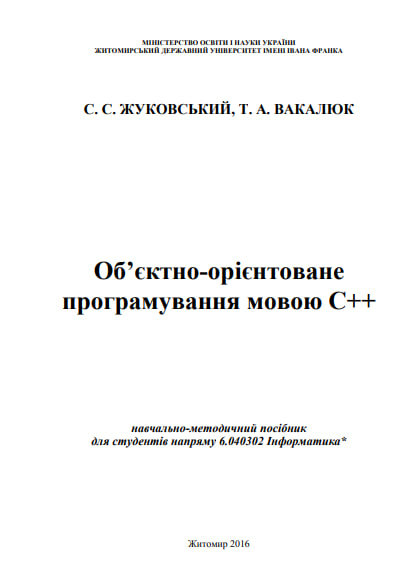
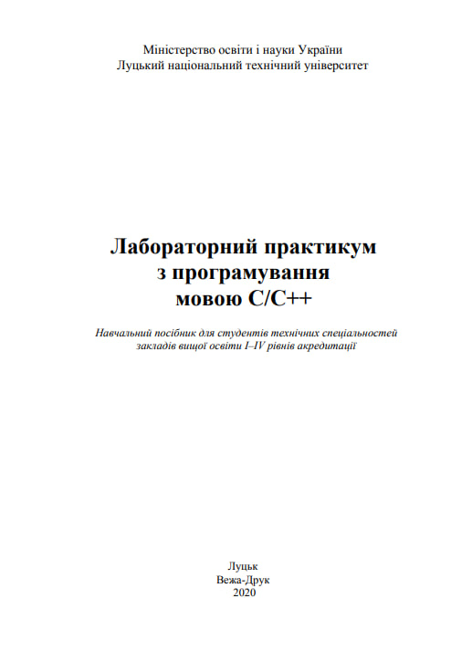

Електронний посібник
Лекції
Лабораторні роботи
Література для лабораторних робіт
Виберіть лекцію
Вибрати
Загальна характеристика мови програмування С++
Структура лінійної програми на мові С++
Типи даних
Математичні та логічні вирази. Масиви.
Оператори консольного вводу/виводу. Оператор розгалуження. Умовний оператор.
Класифікація циклів. Цикли.
Функції складені користувачем. Рекурсія.
Специфіка виконання різноманітних задач з масивами, векторами
Оголошення класів.
Особливості складання програм з класами на мові С++
Особливості складання програм з класами на мові С++, конструкції коду, особливості реалізації принципів ООП
Особливості складання програм з класами на мові С++
Топ ресурсів для самостійного навчання
Coursera
- онлайн-курси з різних тем
Codecademy
- інтерактивне навчання програмуванню
Khan Academy
- освітня платформа з відеоуроками
edX
- курси від провідних університетів світу
YouTube
- відеоуроки та навчальний контент
Stack Overflow
- питання та відповіді з програмування
Mozilla Developer Network (MDN)
- ресурс для веб-розробників
GitHub
- платформа для хостингу коду та спільної розробки
Виберіть лабораторну роботу
Вибрати
Лабораторні роботи 1 семестр
Топ компіляторів для виконання роботи
Code::Blocks
CLion
Visual Studio C++
GCC (GNU Compiler Collection)
Eclipse IDE for C/C++ Developers


Додаткова література
C++ Підручник
Приклади розвʼязку задач на рекурсію в C++
Основи програмування на C ++